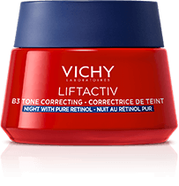
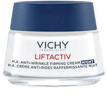
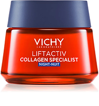
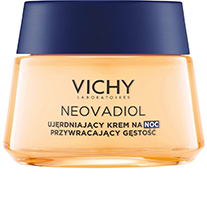

Naujiena naktinis kremas „Liftactiv B3“ su retinoliu
iki -45%
mažiau
pigmentinių POKYČIŲ1
+2 MLN
daugiau
naujų ląstelių
be pigmentinių
POKYČIŲ kiekvieną
naktį2
Veiksminga apsauga nuo pigmentinių odos pokyčių ir raukšlių
-
Oda išsilygina ir sumažėja erzinančių pigmentinių pokyčių
-
Odos ląstelės atsinaujiną kiekvieną naktj, veido oda tampa lygesnė, be pigmentinių pokyčių
-
Odos spalva išsilygina
-
Oda intensyviai drėkinama
Veiksmingas poveikis naudojant
įprastinės priežiūros priemonę ir serumą
IKI -88%
mažiau PIGMENTINIŲ POKYČIŲ
PER 2 MĖNESIUS3
Efektyvios veikliosios medžiagos
Atraskite naktinį kremą, pritaikytą Jūsų poreikiams
SPALVOS POKYČIŲ, LĄSTELIŲ ATSINAUJINIMAS
NAKTINIS KREMAS „LIFTACTIV B3“ SU RETINOLIU
SMULKIŲ RAUKŠLELIŲ UŽPILDYMAS, DRĖKINIMAS, ŠVIESINIMAS
NAKTINIS KREMAS NUO RAUKŠLIŲ „LIFTACTIV SUPREME H.A.“
NAKTINIS KREMAS
NAKTINIS KREMAS
SPALVOS PAKITIMAI
SPINDESYS
SENĖJIMO LĖTINIMAS SMULKIŲ RAUKŠLELIŲ LYGINIMAS
VISĄ NAKTĮ TRUNKANTIS POVEIKIS, DĖL KURIO ATSIRANDA MAŽIAU SPALVOS PAKITIMŲ IR ODAI GRĄŽINAMAS SPINDESYS
VISĄ NAKTĮ TRUNKANTIS POVEIKIS, UŽPILDANTIS IR SUMAŽINANTIS SMULKIAS RAUKŠLELES, ŠVIESINANTIS POVEIKIS
GREITAI ĮSIGERIA IR NEPALIEKA LIPNAUS IR RIEBAUS SLUOKSNIO ANT ODOS
GREITAI ĮSIGERIA IR NEPALIEKA LIPNAUS IR RIEBAUS SLUOKSNIO ANT ODOS
RAUKŠLIŲ MAŽINIMAS, SPALVOS IŠLYGINIMAS

NAKTINIS KREMAS
„LIFTACTIV COLLAGEN SPECIALIST“
ODOS SUAKTYVINIMAS
ODOS TANKĮ DIDINANTIS STANDINAMASIS NAKTINIS KREMAS „NEOVADIOL”
NAKTINIS KREMAS
NAKTINIS KREMAS
SENĖJIMO LĖTINIMAS RAUKŠLIŲ MAŽINIMAS STANDINIMAS ŠVIESINIMAS
SENĖJIMO LĖTINIMAS STANDINIMAS, SPINDESIO GRĄŽINIMAS
VISĄ NAKTĮ TRUNKANTIS RAUKŠLES MAŽINANTIS POVEIKIS, STANDINANTIS IR ŠVIESINANTIS ODĄ
VISĄ NAKTĮ TRUNKANTIS GLOTNINAMASIS POVEIKIS, ATKURIANTIS SPINDESĮ IR SUTEIKIANTIS ODAI VĖSINAMĄJĮ EFEKTĄ
GREITAI ĮSIGERIA IR NEPALIEKA LIPNAUS IR RIEBAUS SLUOKSNIO ANT ODOS
LENGVA KONSISTENCIJA SU VĖSINAMUOJU EFEKTU. NEUŽKEMŠA PORŲ

SPALVOS POKYČIŲ, LĄSTELIŲ ATSINAUJINIMAS
NAKTINIS KREMAS „LIFTACTIV B3“ SU RETINOLIU
SMULKIŲ RAUKŠLELIŲ UŽPILDYMAS, DRĖKINIMAS, ŠVIESINIMAS
NAKTINIS KREMAS NUO RAUKŠLIŲ „LIFTACTIV SUPREME H.A.“
RAUKŠLIŲ MAŽINIMAS, SPALVOS IŠLYGINIMAS
NAKTINIS KREMAS
„LIFTACTIV COLLAGEN SPECIALIST“
ODOS SUAKTYVINIMAS
ODOS TANKĮ DIDINANTIS STANDINAMASIS NAKTINIS KREMAS „NEOVADIOL”
NAKTINIS KREMAS
NAKTINIS KREMAS
NAKTINIS KREMAS
NAKTINIS KREMAS
SPALVOS PAKITIMAI
SPINDESYS
SENĖJIMO LĖTINIMAS
SMULKIŲ RAUKŠLELIŲ
LYGINIMAS
SENĖJIMO LĖTINIMAS
RAUKŠLIŲ MAŽINIMAS
STANDINIMAS ŠVIESINIMAS
SENĖJIMO LĖTINIMAS
STANDINIMAS, SPINDESIO GRĄŽINIMAS
VISĄ NAKTĮ TRUNKANTIS POVEIKIS, DĖL KURIO ATSIRANDA MAŽIAU SPALVOS PAKITIMŲ IR ODAI GRĄŽINAMAS SPINDESYS
VISĄ NAKTĮ TRUNKANTIS POVEIKIS, UŽPILDANTIS IR SUMAŽINANTIS SMULKIAS RAUKŠLELES, ŠVIESINANTIS POVEIKIS
VISĄ NAKTĮ TRUNKANTIS RAUKŠLES MAŽINANTIS POVEIKIS, STANDINANTIS IR ŠVIESINANTIS ODĄ
VISĄ NAKTĮ TRUNKANTIS GLOTNINAMASIS POVEIKIS, ATKURIANTIS SPINDESĮ IR SUTEIKIANTIS ODAI VĖSINAMĄJĮ EFEKTĄ
GREITAI ĮSIGERIA IR NEPALIEKA LIPNAUS IR RIEBAUS SLUOKSNIO ANT ODOS
GREITAI ĮSIGERIA IR NEPALIEKA LIPNAUS IR RIEBAUS SLUOKSNIO ANT ODOS
GREITAI ĮSIGERIA IR NEPALIEKA LIPNAUS IR RIEBAUS SLUOKSNIO ANT ODOS
LENGVA KONSISTENCIJA SU VĖSINAMUOJU EFEKTU. NEUŽKEMŠA PORŲ
24 valandas veikianti priežiūros priemonė,
apsauganti nuo
pigmentinių pokyčių
DIENINIS IR NAKTINIS SERUMAS „LIFTACTIV B3 SERUM“
SUMAŽINA PIGMENTINIUS
POKYČIUS IR RAUKŠLES
IŠLYGINA ODOS SPALVĄ
DIENINIS KREMAS
„LIFTACTIV B3“ SPF 50
SUMAŽINA PIGMENTINIUS POKYČIUS IR UŽKERTA KELIĄ JŲ ATSIRADIMUI
PLATAUS SPEKTRO SPF 50
APSAUGA NUO SAULĖS
NAKTINIS KREMAS „LIFTACTIV B3“ SU RETINOLIUNAKTINIS KREMAS „LIFTACTIV B3“ SU RETINOLIU
VISĄ NAKTĮ TRUNKANTIS POVEIKIS, DĖL KURIO ATSIRANDA MAŽIAU PIGMENTINIŲ POKYČIŲ IR ODAI GRĄŽINAMAS SPINDESYS
Dodaj do koszykaDažnai užduodami klausimai
KAIP NAUDOTI PRODUKTUS SU RETINOLIU?
Naudojimo pradžioje retinolis gali sukelti nežymų paraudimą,
sausumą arba dilgčiojimą. Svarbu retinoli įtrauk pamažu, kad oda
spėtų prie jo priprasti.
KAIP TAI PADARYTI?
1- A SAVAITĖ: naudokite du kartus per savaitę.
2- A SAVAITĖ: naudokite kas antrą naktį per savaitę.
3- A SAVAITĖ: naudokite kiekvieną naktį, atsižvelgdami į savo
odos toleravimą.
Jei odos diskomfortas išlieka, pailginkite tarpus tarp
naudojimų.
Apsvarstykite kokį kiekį per dieną naudosite.
KOKIUS PRODUKTUS NAUDOTI PANAUDOJUS NAKTINĖS PRIEŽIŪROS PRIEMONĘ SU RETINOLIU?
Dienai naudokite produktą su mažiausiai SPF 30 filtru, geriausia
– „LIFTACTIV B3“ SPF 50, pasižymintį didelę apsaugą suteikiančiu
poveikiu. Nenaudokite kartu su kitais retinolio turinčiais
produktais, kadangi dėl to gali sudirgti Jūsų oda.
AR NAKČIAI NAUDOJAMI PRODUKTAI VEIKIA STIPRIAU?
Naktį natūrali odos ląstelių regeneracija pasiekia aukščiausią
lygį. Todėl tai yra tinkamiausias metas aprūpinti odą
sudedamosiomis dalimis, skatinsiančiomis ląstelių atsinaujinimą
saugiu ir klinikiniais tyrimais įrodytu būdu. Retinolio ir
niacinamido derinys – perversmą sukėlęs duetas, kurį sudaro
koncentruotos veikliosios sudedamosios medžiagos,
pagreitinančios 2 milijonų naujų ląstelių gamybą be spalvos
pokyčių*
1. Klinikiniai tyrimai. Izoliuotos tamsios pigmentinės dėmės kontrasto
pagerėjimo vidutinis rezultatas apskaičiuotas ištyrus 33 % tyrimo
grupės dalyvių po 2 mėnesių. Vidutinis rezultatas ištyrus 44 asmenis:
30,4 %.
2. Instrumentinis tyrimas, atliktas po 23 dienų. 31 ištirtųjų.
3. Klinikiniai tyrimai. Serumo „B3“naudojimas su SPF 50 kremu. Tamsių
dėmių sumažėjimo odos paviršiuje vidutinis rezultatas apskaičiuotas
ištyrus 33 % tyrimo grupės dalyvių po 2 mėnesių. 35 moterims dėmių
sumažėjo vidutiniškai 65 %.